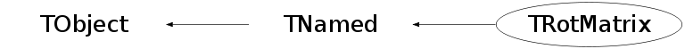

Function Members (Methods)
public:
| TRotMatrix() | |
| TRotMatrix(const TRotMatrix&) | |
| TRotMatrix(const char* name, const char* title, Double_t* matrix) | |
| TRotMatrix(const char* name, const char* title, Double_t theta, Double_t phi, Double_t psi) | |
| TRotMatrix(const char* name, const char* title, Double_t theta1, Double_t phi1, Double_t theta2, Double_t phi2, Double_t theta3, Double_t phi3) | |
| virtual | ~TRotMatrix() |
| void | TObject::AbstractMethod(const char* method) const |
| virtual void | TObject::AppendPad(Option_t* option = "") |
| virtual void | TObject::Browse(TBrowser* b) |
| static TClass* | Class() |
| virtual const char* | TObject::ClassName() const |
| virtual void | TNamed::Clear(Option_t* option = "") |
| virtual TObject* | TNamed::Clone(const char* newname = "") const |
| virtual Int_t | TNamed::Compare(const TObject* obj) const |
| virtual void | TNamed::Copy(TObject& named) const |
| virtual void | TObject::Delete(Option_t* option = "")MENU |
| virtual Double_t | Determinant() const |
| virtual Int_t | TObject::DistancetoPrimitive(Int_t px, Int_t py) |
| virtual void | TObject::Draw(Option_t* option = "") |
| virtual void | TObject::DrawClass() constMENU |
| virtual TObject* | TObject::DrawClone(Option_t* option = "") constMENU |
| virtual void | TObject::Dump() constMENU |
| virtual void | TObject::Error(const char* method, const char* msgfmt) const |
| virtual void | TObject::Execute(const char* method, const char* params, Int_t* error = 0) |
| virtual void | TObject::Execute(TMethod* method, TObjArray* params, Int_t* error = 0) |
| virtual void | TObject::ExecuteEvent(Int_t event, Int_t px, Int_t py) |
| virtual void | TObject::Fatal(const char* method, const char* msgfmt) const |
| virtual void | TNamed::FillBuffer(char*& buffer) |
| virtual TObject* | TObject::FindObject(const char* name) const |
| virtual TObject* | TObject::FindObject(const TObject* obj) const |
| virtual Option_t* | TObject::GetDrawOption() const |
| static Long_t | TObject::GetDtorOnly() |
| virtual Double_t* | GetGLMatrix(Double_t* rGLMatrix) const |
| virtual const char* | TObject::GetIconName() const |
| virtual Double_t* | GetMatrix() |
| virtual const char* | TNamed::GetName() const |
| virtual Int_t | GetNumber() const |
| virtual char* | TObject::GetObjectInfo(Int_t px, Int_t py) const |
| static Bool_t | TObject::GetObjectStat() |
| virtual Option_t* | TObject::GetOption() const |
| virtual Double_t | GetPhi() const |
| virtual Double_t | GetPsi() const |
| virtual Double_t | GetTheta() const |
| virtual const char* | TNamed::GetTitle() const |
| virtual Int_t | GetType() const |
| virtual UInt_t | TObject::GetUniqueID() const |
| virtual Bool_t | TObject::HandleTimer(TTimer* timer) |
| virtual ULong_t | TNamed::Hash() const |
| virtual void | TObject::Info(const char* method, const char* msgfmt) const |
| virtual Bool_t | TObject::InheritsFrom(const char* classname) const |
| virtual Bool_t | TObject::InheritsFrom(const TClass* cl) const |
| virtual void | TObject::Inspect() constMENU |
| void | TObject::InvertBit(UInt_t f) |
| virtual TClass* | IsA() const |
| virtual Bool_t | TObject::IsEqual(const TObject* obj) const |
| virtual Bool_t | TObject::IsFolder() const |
| Bool_t | TObject::IsOnHeap() const |
| virtual Bool_t | IsReflection() const |
| virtual Bool_t | TNamed::IsSortable() const |
| Bool_t | TObject::IsZombie() const |
| virtual void | TNamed::ls(Option_t* option = "") const |
| void | TObject::MayNotUse(const char* method) const |
| virtual Bool_t | TObject::Notify() |
| void | TObject::Obsolete(const char* method, const char* asOfVers, const char* removedFromVers) const |
| static void | TObject::operator delete(void* ptr) |
| static void | TObject::operator delete(void* ptr, void* vp) |
| static void | TObject::operator delete[](void* ptr) |
| static void | TObject::operator delete[](void* ptr, void* vp) |
| void* | TObject::operator new(size_t sz) |
| void* | TObject::operator new(size_t sz, void* vp) |
| void* | TObject::operator new[](size_t sz) |
| void* | TObject::operator new[](size_t sz, void* vp) |
| TRotMatrix& | operator=(const TRotMatrix&) |
| virtual void | TObject::Paint(Option_t* option = "") |
| virtual void | TObject::Pop() |
| virtual void | TNamed::Print(Option_t* option = "") const |
| virtual Int_t | TObject::Read(const char* name) |
| virtual void | TObject::RecursiveRemove(TObject* obj) |
| void | TObject::ResetBit(UInt_t f) |
| virtual void | TObject::SaveAs(const char* filename = "", Option_t* option = "") constMENU |
| virtual void | TObject::SavePrimitive(ostream& out, Option_t* option = "") |
| virtual const Double_t* | SetAngles(Double_t theta1, Double_t phi1, Double_t theta2, Double_t phi2, Double_t theta3, Double_t phi3) |
| void | TObject::SetBit(UInt_t f) |
| void | TObject::SetBit(UInt_t f, Bool_t set) |
| virtual void | TObject::SetDrawOption(Option_t* option = "")MENU |
| static void | TObject::SetDtorOnly(void* obj) |
| virtual void | SetMatrix(const Double_t* matrix) |
| virtual void | SetName(const char* name) |
| virtual void | TNamed::SetNameTitle(const char* name, const char* title) |
| static void | TObject::SetObjectStat(Bool_t stat) |
| virtual void | TNamed::SetTitle(const char* title = "")MENU |
| virtual void | TObject::SetUniqueID(UInt_t uid) |
| virtual void | ShowMembers(TMemberInspector& insp) |
| virtual Int_t | TNamed::Sizeof() const |
| virtual void | Streamer(TBuffer& b) |
| void | StreamerNVirtual(TBuffer& b) |
| virtual void | TObject::SysError(const char* method, const char* msgfmt) const |
| Bool_t | TObject::TestBit(UInt_t f) const |
| Int_t | TObject::TestBits(UInt_t f) const |
| virtual void | TObject::UseCurrentStyle() |
| virtual void | TObject::Warning(const char* method, const char* msgfmt) const |
| virtual Int_t | TObject::Write(const char* name = 0, Int_t option = 0, Int_t bufsize = 0) |
| virtual Int_t | TObject::Write(const char* name = 0, Int_t option = 0, Int_t bufsize = 0) const |
protected:
| virtual void | TObject::DoError(int level, const char* location, const char* fmt, va_list va) const |
| void | TObject::MakeZombie() |
private:
| virtual void | SetReflection() |
Data Members
public:
| enum { | kReflection | |
| }; | ||
| enum TObject::EStatusBits { | kCanDelete | |
| kMustCleanup | ||
| kObjInCanvas | ||
| kIsReferenced | ||
| kHasUUID | ||
| kCannotPick | ||
| kNoContextMenu | ||
| kInvalidObject | ||
| }; | ||
| enum TObject::[unnamed] { | kIsOnHeap | |
| kNotDeleted | ||
| kZombie | ||
| kBitMask | ||
| kSingleKey | ||
| kOverwrite | ||
| kWriteDelete | ||
| }; |
protected:
| Double_t | fMatrix[9] | Rotation matrix |
| TString | TNamed::fName | object identifier |
| Int_t | fNumber | Rotation matrix number |
| Double_t | fPhi | phi angle |
| Double_t | fPsi | psi angle |
| Double_t | fTheta | theta angle |
| TString | TNamed::fTitle | object title |
| Int_t | fType | Type of matrix (0=identity, 1=reflexion, 2=otherwise) |
Class Charts
{kind=link}
{kind=link}
{kind=link}
{kind=link}

Function documentation
TRotMatrix(const char* name, const char* title, Double_t theta, Double_t phi, Double_t psi)
RotMatrix normal constructor.
TRotMatrix(const char* name, const char* title, Double_t theta1, Double_t phi1, Double_t theta2, Double_t phi2, Double_t theta3, Double_t phi3)
RotMatrix normal constructor defined a la GEANT. The TRotMatrix constructor with six angles uses the GEANT convention: theta1 is the polar angle of the x-prim axis in the main reference system (MRS), theta2 and theta3 have the same meaning for the y-prim and z-prim axis. Phi1 is the azimuthal angle of the x-prim in the MRS and phi2 and phi3 have the same meaning for y-prim and z-prim. for example, the unit matrix is defined in the following way. x-prim || x, y-prim || y, z-prim || z means: theta1=90, theta2=90, theta3=0, phi1=0, phi2=90, phi3=0
Double_t* GetGLMatrix(Double_t* rGLMatrix) const
const Double_t* SetAngles(Double_t theta1, Double_t phi1, Double_t theta2, Double_t phi2, Double_t theta3, Double_t phi3)
theta1 is the polar angle of the x-prim axis in the main reference system
(MRS), theta2 and theta3 have the same meaning for the y-prim and z-prim
axis.
Phi1 is the azimuthal angle of the x-prim in the MRS and phi2 and phi3
have the same meaning for y-prim and z-prim.
for example, the unit matrix is defined in the following way.
x-prim || x, y-prim || y, z-prim || z
means: theta1=90, theta2=90, theta3=0, phi1=0, phi2=90, phi3=0
void SetReflection()
SetReflection() - checks whether the determinant of this matrix defines the reflection transformation and set the "reflection" flag if any